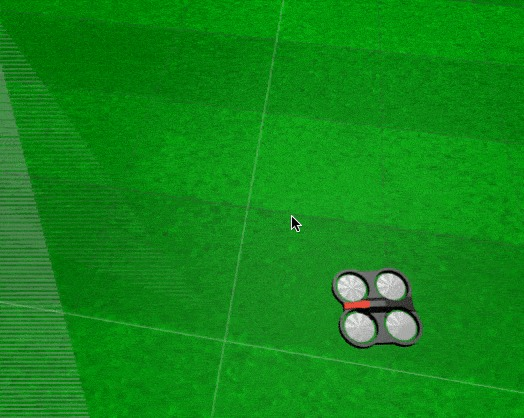

<img src="img/drone.jpg" width="450" />
<!-- <img src="img/rosject.png" width="250" style="float:left;" /> --><!-- * ROSject Link: http://bit.ly/2naOJidâ* Package Name: **drone_construct**â* Launch File: **main.launch**--><b>Estimated time to completion:</b> 3 hours<br><br><b>What will you learn with this unit?</b>â* What is a ROS action* How to manage the actions of a robot* How to call an action serverEstimated time to completion: 3 hours
What will you learn with this unit?
1) Did you understand the previous sections about topics and services?<br>2) Are they clear to you?<br>3) Did you have a good breakfast today?<br>âIf your answers to all of those questions were yes, then you are ready to learn about ROS actions. Otherwise, go back and do not come back until all of those answers are a big YES. You are going to need it...1) Did you understand the previous sections about topics and services?
2) Are they clear to you?
3) Did you have a good breakfast today?
If your answers to all of those questions were yes, then you are ready to learn about ROS actions. Otherwise, go back and do not come back until all of those answers are a big YES. You are going to need it...
Before starting with ROS actions learning, let's have some fun with the quadrotor simulation.<br>Make the quadrotor take off and control it with the keyboard.<br> How would you do that? âBy issuing the following commands:Before starting with ROS actions learning, let's have some fun with the quadrotor simulation.
Make the quadrotor take off and control it with the keyboard.
How would you do that?
By issuing the following commands:
First, you need to take off.First, you need to take off.
<table style="float:left;background: #407EAF"><tr><th><p class="transparent">Execute in WebShell #1</p></th></tr></table>|
Execute in WebShell #1 |
|---|
rostopic pub /drone/takeoff std_msgs/Empty "{}"Hit **CTRL+C** to stop it and to be able to type more commands. In this case, the commands to move the drone with the keyboard.Hit CTRL+C to stop it and to be able to type more commands. In this case, the commands to move the drone with the keyboard.
â<table style="float:left;background: #407EAF"><tr><th><p class="transparent">Execute in WebShell #1</p></th></tr></table>|
Execute in WebShell #1 |
|---|
rosrun teleop_twist_keyboard teleop_twist_keyboard.pyTo land the drone, just publish into the **/drone/land** topic:To land the drone, just publish into the /drone/land topic:
<table style="float:left;background: #407EAF"><tr><th><p class="transparent">Execute in WebShell #1</p></th></tr></table>|
Execute in WebShell #1 |
|---|
rostopic pub /drone/land std_msgs/Empty "{}"<p style="background:#3B8F10;color:white;">**Code Explanation #1**</p>Code Explanation #1
**"rosrun"**: ROS command that allows you to run a ROS program without having to create a launch file to launch it (it is a different way from what we've been doing here).â**"teleop_twist_keyboard"**: Name of the package where the ROS program is. In this case, where the python executable is.â**"teleop_twist_keyboard.py"**: Python executable that will be run. In this case, it's an executable that allows you to input movement commands through the keyboard. When executed, it displays the instructions to move the robot."rosrun": ROS command that allows you to run a ROS program without having to create a launch file to launch it (it is a different way from what we've been doing here).
"teleop_twist_keyboard": Name of the package where the ROS program is. In this case, where the python executable is.
"teleop_twist_keyboard.py": Python executable that will be run. In this case, it's an executable that allows you to input movement commands through the keyboard. When executed, it displays the instructions to move the robot.
<p style="background:#3B8F10;color:white;">**End Code Explanation #1**</p>End Code Explanation #1
<figure> <img id="fig-4.1" src="img/unit4_quadrotor.gif"></img> <center> <figcaption>Fig.4.1 - Ardrone moved with teleop_twist_keyboard.py.</figcaption></center></figure><p style="background:#EE9023;color:white;">**Exercise 4.1**</p><br>Try to takeoff, move, and land the drone using the keyboard, as shown in the gif in <a href="#fig-4.1">{Fig:4.1}</a>Exercise 4.1
<p style="background:#EE9023;color:white;">**END Exercise 4.1**</p>END Exercise 4.1
#### Actions are like asynchronous calls to servicesActions are very similar to services. When you call an action, you are calling a functionality that another node is providing. Just the same as with services. The difference is that when your node calls a service, it must wait until the service finishes. <b>When your node calls an action, it doesn't necessarily have to wait for the action to complete.</b> â<b>Hence, an action is an asynchronous call to another node's functionality</b>.Actions are very similar to services. When you call an action, you are calling a functionality that another node is providing. Just the same as with services. The difference is that when your node calls a service, it must wait until the service finishes. When your node calls an action, it doesn't necessarily have to wait for the action to complete.
Hence, an action is an asynchronous call to another node's functionality.
ââ* The node that provides the functionality has to contain an <b>action server</b>.The <i>action server</i> allows other nodes to call that action functionality.ââ* The node that calls to the functionality has to contain an <b>action client</b>.The <i>action client</i> allows a node to connect to the <i>action server</i> of another node.âââââ<figure> <img id="fig-4.2" src="img/action_interface.png"/> <br> <center> <figcaption>Fig.4.2 - Action Interface Diagram showing the under-the-hood communication system</figcaption></center></figure>
Now let's see an action in action (I'm so funny!)Now let's see an action in action (I'm so funny!)
<p style="background:#EE9023;color:white;" id="ex-4-2">**Exercise 4.2**</p><br>Go to a shell and launch the ardrone action server with the following command:<br><br><span style="color:red;">**Important!!** Keep this program running for the rest of the tutorial, since it is the one that provides the action server you are going to use.</span>â<table style="float:left;background: #407EAF"><tr><th><p class="transparent">Execute in WebShell #1, <span class="ign_red">Leave It Running</span></p></th></tr></table>Exercise 4.2
|
Execute in WebShell #1, Leave It Running |
|---|
roslaunch ardrone_as action_server.launch<b>Questions:</b><br>â* How do you know the whole list of topics available?âQuestions:
<table style="float:left;background: #407EAF"><tr><th><p class="transparent">Execute in WebShell #2</p></th></tr></table>|
Execute in WebShell #2 |
|---|
rostopic listâ* How do you know the whole list of services available?â<table style="float:left;background: #407EAF"><tr><th><p class="transparent">Execute in WebShell #2</p></th></tr></table>|
Execute in WebShell #2 |
|---|
rosservice listâ* How do you know the whole list of action servers available?â<table style="float:left;background: #407EAF"><tr><th><p class="transparent">Execute in WebShell #2</p></th></tr></table>|
Execute in WebShell #2 |
|---|
rosaction list<figure><center><h3>WRONG GUESS!!!</h3></center><img id="fig-4.3" src="img/giphy.gif" height="420" width="420"/><center> <figcaption>Fig.4.3 - Didn't Say The Magic Word </figcaption></center> </figure>
In order to find which actions are available on a robot, you must do a **<i>rostopic list.</i>**In order to find which actions are available on a robot, you must do a rostopic list.
<table style="float:left;background: #407EAF"><tr><th><p class="transparent">Execute in WebShell #2</p></th></tr></table>ââ|
Execute in WebShell #2 |
|---|
rostopic list<table style="float:left;background: #407EAF"><tr><th><p class="transparent">WebShell #2 Output</p></th></tr></table>|
WebShell #2 Output |
|---|
user ~ $ rostopic list....../ardrone_action_server/cancel/ardrone_action_server/feedback/ardrone_action_server/goal/ardrone_action_server/result/ardrone_action_server/status......<p style="background:#EE9023;color:white;" id="ex-4-2">**END Exercise 4.2**</p>END Exercise 4.2
When a robot provides an action, you will see that in the topics list. There are 5 topics with the same base name, and with the subtopics **<i>cancel</i>**, **<i>feedback</i>**, **<i>goal</i>**, **<i>result</i>**, and **<i>status</i>**. âFor example, in the previous rostopic list, the following topics were listed:When a robot provides an action, you will see that in the topics list. There are 5 topics with the same base name, and with the subtopics cancel, feedback, goal, result, and status.
For example, in the previous rostopic list, the following topics were listed:
/ardrone_action_server/cancel/ardrone_action_server/feedback/ardrone_action_server/goal/ardrone_action_server/result/ardrone_action_server/statusThis is because you previously launched the <b>ardrone_action_server</b> with the command <b>roslaunch ardrone_as action_server.launch</b> <a href="#ex-4-2">( Excercice 4.2 )</a>.This is because you previously launched the ardrone_action_server with the command roslaunch ardrone_as action_server.launch ( Excercice 4.2 ).
<b>Every action server creates those 5 topics, so you can always tell that an action server is there because you identified those 5 topics.</b>Every action server creates those 5 topics, so you can always tell that an action server is there because you identified those 5 topics.
Therefore, in the example above:<br>â* <span style="background: #407EAF; color: white"><b>ardrone_action_server</b></span>: Is the name of the Action Server.<br><br>* <span style="background: #407EAF;color: orange"><b>cancel, feedback, goal, result and status</b></span>: Are the messages used to comunicate with the Action Server.</li>âTherefore, in the example above:
The **<i>ardrone_action_server</i>** action server is an action that you can call. If you call it, it will start taking pictures with the front camera, one picture every second, for the amount of seconds specified in the calling message (it is a parameter that you specify in the call).The ardrone_action_server action server is an action that you can call. If you call it, it will start taking pictures with the front camera, one picture every second, for the amount of seconds specified in the calling message (it is a parameter that you specify in the call).
<b>Calling an action server means sending a message to it</b>. In the same way as with <i>topics</i> and <i>services</i>, it all works by passing messages around.ââ* The message of a topic is composed of a single part: the information the topic provides.<br>* The message of a service has two parts: the goal and the response.<br>* <b>The message of an action server is divided into three parts: the goal, the result, and the feedback.</b>âCalling an action server means sending a message to it. In the same way as with topics and services, it all works by passing messages around.
All of the action messages used are defined in the **<i>action</i>** directory of their package.<br><br>You can go to the **<i>ardrone_as</i>** package and see that it contains a directory called **<i>action</i>**. Inside that <i>action</i> directory, there is a file called **<i>Ardrone.action</i>**. That is the file that specifies the type of the message that the action uses.âType in a shell the following commands to see the message structure:All of the action messages used are defined in the action directory of their package.
You can go to the ardrone_as package and see that it contains a directory called action. Inside that action directory, there is a file called Ardrone.action. That is the file that specifies the type of the message that the action uses.
Type in a shell the following commands to see the message structure:
<p style="background:#EE9023;color:white;">**Exercise 4.3**</p><br>Type in a shell the following commands to see the message structure:<br>â<table style="float:left;background: #407EAF"><tr><th><p class="transparent">Execute in WebShell #2</p></th></tr></table>Exercise 4.3
|
Execute in WebShell #2 |
|---|
roscd ardrone_as/action; cat Ardrone.action<table style="float:left;background: #407EAF"><tr><th><p class="transparent">WebShell #2 Output</p></th></tr></table>|
WebShell #2 Output |
|---|
user ~ $ roscd ardrone_as/action; cat Ardrone.action#goal for the droneint32 nseconds # the number of seconds the drone will be taking pictures---#resultsensor_msgs/CompressedImage[] allPictures # an array containing all the pictures taken along the nseconds---#feedbacksensor_msgs/CompressedImage lastImage # the last image taken<p style="background:#EE9023;color:white;">**END Exercise 4.3**</p>END Exercise 4.3
You can see in the previous step how the message is composed of three parts:<br><br><span style="color: orange"><b>goal</b></span>: Consists of a variable called **<i>nseconds</i>** of type **<i>Int32</i>**. This Int32 type is a standard ROS message, therefore, it can be found in the <a href="http://wiki.ros.org/std_msgs" target="Empty">std_msgs package</a>. Because it's a standard package of ROS, it's not needed to indicate the package where the <i>Int32</i> can be found. <br><span style="color: orange"><b>result</b></span>: Consists of a variable called **<i>allPictures</i>**, which is an array of type **<i>CompressedImage[]</i>**, found in the <a href="http://wiki.ros.org/sensor_msgs" target="Empty">sensor_msgs package</a>.<br><span style="color: orange"><b>feedback</b></span>: Consists of a variable called **<i>lastImage</i>** of type **<i>CompressedImage[]</i>**, found in the <a href="http://wiki.ros.org/sensor_msgs" target="Empty">sensor_msgs package</a>.<br>âYou will learn in the second part of this chapter about how to create your own action messages. For now, you must only understand that every time you call an action, the message implied contains three parts, and that each part can contain <b>more than one</b> variable.You can see in the previous step how the message is composed of three parts:
goal: Consists of a variable called nseconds of type Int32. This Int32 type is a standard ROS message, therefore, it can be found in the std_msgs package. Because it's a standard package of ROS, it's not needed to indicate the package where the Int32 can be found.
result: Consists of a variable called allPictures, which is an array of type CompressedImage[], found in the sensor_msgs package.
feedback: Consists of a variable called lastImage of type CompressedImage[], found in the sensor_msgs package.
You will learn in the second part of this chapter about how to create your own action messages. For now, you must only understand that every time you call an action, the message implied contains three parts, and that each part can contain more than one variable.
Due to the fact that calling an action server does not interrupt your thread, action servers provide a message called <b><i>the feedback</i></b>. The feedback is a message that the action server generates every once in a while to indicate how the action is going (informing the caller of the status of the requested action). It is generated while the action is in progress.Due to the fact that calling an action server does not interrupt your thread, action servers provide a message called the feedback. The feedback is a message that the action server generates every once in a while to indicate how the action is going (informing the caller of the status of the requested action). It is generated while the action is in progress.
The way you call an action server is by implementing an <i><b>action client</b></i>.âThe following is a self-explanatory example of how to implement an action client that calls the ardrone_action_server and makes it take pictures for 10 seconds.The way you call an action server is by implementing an action client.
The following is a self-explanatory example of how to implement an action client that calls the ardrone_action_server and makes it take pictures for 10 seconds.
<p style="background:#EE9023;color:white;">**Exercise 4.4**</p><br>Execute the following Python code <a href="#prg-4-4a">ardone_action_client.py</a> by clicking on it and then clicking on the play button on the top righ-hand corner of the IPython notebook.<br><br> <div class='white_bg'><img src="img/font-awesome_step-forward.png" style="float:left"/><br><br></div><br>You can also press **<i>[CTRL]+[Enter]</i>** to execute it.<br><br>Observe how the feedback messages are received (printed below the code).<br>â<font style="color:red;">**Important!!** Remember that you have to have the **<i>roslaunch ardrone_as action_server.launch</i>** running (probably in WebShell #1), otherwise this won't work because there will be NO action server to be connected to.</font>Exercise 4.4
<p style="background:#EE9023;color:white;">**Exercise 4.4**</p>Exercise 4.4
<p style="background:#3B8F10;color:white;" id="prg-4-4a">**Python Program {4.4a}: ardrone_action_client.py** </p>Python Program {4.4a}: ardrone_action_client.py
#! /usr/bin/env pythonimport rospyimport timeimport actionlibfrom ardrone_as.msg import ArdroneAction, ArdroneGoal, ArdroneResult, ArdroneFeedbackânImage = 1â# definition of the feedback callback. This will be called when feedback# is received from the action server# it just prints a message indicating a new message has been receiveddef feedback_callback(feedback): global nImage print('[Feedback] image n.%d received'%nImage) nImage += 1â# initializes the action client noderospy.init_node('drone_action_client')â# create the connection to the action serverclient = actionlib.SimpleActionClient('/ardrone_action_server', ArdroneAction)# waits until the action server is up and runningclient.wait_for_server()â# creates a goal to send to the action servergoal = ArdroneGoal()goal.nseconds = 10 # indicates, take pictures along 10 secondsâ# sends the goal to the action server, specifying which feedback function# to call when feedback receivedclient.send_goal(goal, feedback_cb=feedback_callback)â# Uncomment these lines to test goal preemption:#time.sleep(3.0)#client.cancel_goal() # would cancel the goal 3 seconds after startingâ# wait until the result is obtained# you can do other stuff here instead of waiting# and check for status from time to time # status = client.get_state()# check the client API link below for more infoâclient.wait_for_result()âprint('[Result] State: %d'%(client.get_state()))<p style="background:#3B8F10;color:white;">**Code Explanation Python Program: {4.4a}**</p>Code Explanation Python Program: {4.4a}
The code to call an action server is very simple:â* First, you create a client connected to the action server you want:<br><br> <center><i>client = actionlib.SimpleActionClient(<span style="color:green;">'/ardrone_action_server'</span>, <span style="color:orange">ArdroneAction</span>)</i></center> <center><i>client = actionlib.SimpleActionClient(<span style="color:green;">'/the_action_server_name'</span>, <span style="color:orange">the_action_server_message_python_object</span>)</i></center><br><br> * <span style="color:green;">First parameter</span> is the name of the action server you want to connecto to.<br> * <span style="color:orange">Second parameter</span> is the type of action message that it uses. The convention goes as follows: <br><br>If your <b>action message file</b> was called **<i>Ardrone.action</i>**, then the type of action message you must specify is **<i>ArdroneAction</i>**. The same rule applies to any other type (**<i>R2Action</i>**, for an **<i>R2.action</i>** file or **<i>LukeAction</i>** for a **<i>Luke.action</i>** file). In our exercise it is:<br><br><center><i>client = actionlib.SimpleAction('/ardrone_action_server', ArdroneAction)</i></center>â â* Then you create a goal:<br><br> <center><i>goal = ArdroneGoal()</i></center> <br> Again, the convention goes as follows: <br><br> If your <b>action message file</b> was called **<i>Ardrone.action</i>**, then the type of goal message you must specify is **<i>ArdroneGoal()</i>**. The same rule applies to any other type (**<i>R2Goal()</i>** for an **<i>R2.action</i>** file or **<i>LukeGoal()</i>** for a **<i>Luke.action</i>** file). <br> Because the goal message requires to provide the number of seconds taking pictures (in the **<i>nseconds variable</i>**), you must set that parameter in the goal class instance:<br><br> <center><i>goal.nseconds = 10</i></center><br>â* Next, you send the goal to the action server:<br><br> <center><i>client.send_goal(goal, feedback_cb=feedback_callback)</i></center> <br> That sentence calls the action. In order to call it, you must specify 2 things: 1. The goal parameters 2. A feedback function to be called from time to time to know the status of the action. <br> At this point, the action server has received the goal and started to execute it (taking pictures for 10 seconds). Also, feedback messages are being received. Every time a feedback message is received, the **<i>feedback_callback</i>** function is executed.<br><br>* Finally, you wait for the result:<br><br> <center><i>client.wait_for_result()</i></center>â<br>The code to call an action server is very simple:
First, you create a client connected to the action server you want:
Then you create a goal:
Next, you send the goal to the action server:
A feedback function to be called from time to time to know the status of the action.
At this point, the action server has received the goal and started to execute it (taking pictures for 10 seconds). Also, feedback messages are being received. Every time a feedback message is received, the feedback_callback function is executed.
<p style="background:#3B8F10;color:white;">**End Code Explanation {4.4a}**</p>End Code Explanation {4.4a}
### How to perform other tasks while the Action is in progressYou know how to call an action and wait for the result but... That's exactly what a service does! Then why are you learning actions?<br>Good point!<br><br>So, the **SimpleActionClient** objects have two functions that can be used for knowing if the action that is being performed has finished, and how:<br>â1) <b>wait_for_result()</b>: This function is very simple. When called, it will wait until the action has finished and returns a true value. As you can see, it's useless if you want to perform other tasks in parallel because the program will stop there until the action is finished.<br>â2) <b>get_state()</b>: This function is much more interesting. When called, it returns an integer that indicates in which state is the action that the SimpleActionClient object is connected to.<br>â0 ==> PENDING<br>1 ==> ACTIVE<br>2 ==> DONE<br>3 ==> WARN<br>4 ==> ERROR<br>âThis allows you to create a while loop that checks if the value returned by get_state() is 2 or higher. If it is not, it means that the action is still in progress, so you can keep doing other things.You know how to call an action and wait for the result but... That's exactly what a service does! Then why are you learning actions?
Good point!
So, the SimpleActionClient objects have two functions that can be used for knowing if the action that is being performed has finished, and how:
1) wait_for_result(): This function is very simple. When called, it will wait until the action has finished and returns a true value. As you can see, it's useless if you want to perform other tasks in parallel because the program will stop there until the action is finished.
2) get_state(): This function is much more interesting. When called, it returns an integer that indicates in which state is the action that the SimpleActionClient object is connected to.
0 ==> PENDING
1 ==> ACTIVE
2 ==> DONE
3 ==> WARN
4 ==> ERROR
This allows you to create a while loop that checks if the value returned by get_state() is 2 or higher. If it is not, it means that the action is still in progress, so you can keep doing other things.
<p style="background:#EE9023;color:white;">**Exercise 4.5**</p><br>Execute the following Python codes {4.5a: wait_for_result_test.py} and {4.5b: no_wait_for_result_test.py} by clicking on them, one at a time, and then clicking on the play button on the top righ-hand corner of the IPython notebook.<br><br> <div class='white_bg'><img src="img/font-awesome_step-forward.png" style="float:left"/><br><br></div><br>You can also press **<i>[CTRL]+[Enter]</i>** to execute it.<br>âWhen the program has finished, don't forget to <span class="ign_red">restart the Kernel</span>. This will clean up all the nodes generated by ROS through the python program. This is necessary because python programs can only launch <b>one</b> rospy node. Because this notebook is just a divided python script, it will give rospy Exception if you try to execute two snipets consecutively without restarting the kernel.You can do it by pressing the icon.<br><br><div class='white_bg'><img src="img/refresh_icon.png" style="float:left"/><br><br></div><br>ââObserve the difference between them (the code is printed below) and think about why this is.<br><br>â<font style="color:red;">**Important!! Remember that you need to have the **<i>roslaunch ardrone_as action_server.launch</i>** running (probably in WebShell #1), otherwise this won't work because there will be NO actionServer to be connected to.</font>Exercise 4.5
When the program has finished, don't forget to restart the Kernel. This will clean up all the nodes generated by ROS through the python program. This is necessary because python programs can only launch one rospy node. Because this notebook is just a divided python script, it will give rospy Exception if you try to execute two snipets consecutively without restarting the kernel.
You can do it by pressing the icon.
Observe the difference between them (the code is printed below) and think about why this is.
<p style="background:#EE9023;color:white;">**END Exercise 4.5**</p>END Exercise 4.5
<p style="background:#3B8F10;color:white;">**Python Program {4.5a}: wait_for_result_test.py** </p>Python Program {4.5a}: wait_for_result_test.py
#! /usr/bin/env pythonâimport rospyimport timeimport actionlibfrom ardrone_as.msg import ArdroneAction, ArdroneGoal, ArdroneResult, ArdroneFeedbackânImage = 1â# definition of the feedback callback. This will be called when feedback# is received from the action server# it just prints a message indicating a new message has been receiveddef feedback_callback(feedback): global nImage print('[Feedback] image n.%d received'%nImage) nImage += 1 â# initializes the action client noderospy.init_node('example_with_waitforresult_action_client_node')ââaction_server_name = '/ardrone_action_server'client = actionlib.SimpleActionClient(action_server_name, ArdroneAction)â# waits until the action server is up and runningrospy.loginfo('Waiting for action Server '+action_server_name)client.wait_for_server()rospy.loginfo('Action Server Found...'+action_server_name)ââ# creates a goal to send to the action servergoal = ArdroneGoal()goal.nseconds = 10 # indicates, take pictures along 10 secondsâclient.send_goal(goal, feedback_cb=feedback_callback)rate = rospy.Rate(1)ârospy.loginfo("Lets Start The Wait for the Action To finish Loop...")while not client.wait_for_result(): rospy.loginfo("Doing Stuff while waiting for the Server to give a result....") rate.sleep()ârospy.loginfo("Example with WaitForResult Finished.")<p style="background:#3B8F10;color:white;">**Python Program {4.5b}: no_wait_for_result_test.py** </p>Python Program {4.5b}: no_wait_for_result_test.py
#! /usr/bin/env pythonâimport rospyimport timeimport actionlibfrom ardrone_as.msg import ArdroneAction, ArdroneGoal, ArdroneResult, ArdroneFeedbackâ"""class SimpleGoalState: PENDING = 0 ACTIVE = 1 DONE = 2 WARN = 3 ERROR = 4â"""# We create some constants with the corresponing vaules from the SimpleGoalState classPENDING = 0ACTIVE = 1DONE = 2WARN = 3ERROR = 4ânImage = 1â# definition of the feedback callback. This will be called when feedback# is received from the action server# it just prints a message indicating a new message has been receiveddef feedback_callback(feedback): """ Error that might jump self._feedback.lastImage = AttributeError: 'ArdroneAS' obj """ global nImage print('[Feedback] image n.%d received'%nImage) nImage += 1â# initializes the action client noderospy.init_node('example_no_waitforresult_action_client_node')âaction_server_name = '/ardrone_action_server'client = actionlib.SimpleActionClient(action_server_name, ArdroneAction)â# waits until the action server is up and runningrospy.loginfo('Waiting for action Server '+action_server_name)client.wait_for_server()rospy.loginfo('Action Server Found...'+action_server_name)â# creates a goal to send to the action servergoal = ArdroneGoal()goal.nseconds = 10 # indicates, take pictures along 10 secondsâclient.send_goal(goal, feedback_cb=feedback_callback)ââ# You can access the SimpleAction Variable "simple_state", that will be 1 if active, and 2 when finished.#Its a variable, better use a function like get_state.#state = client.simple_state# state_result will give the FINAL STATE. Will be 1 when Active, and 2 if NO ERROR, 3 If Any Warning, and 3 if ERRORstate_result = client.get_state()ârate = rospy.Rate(1)ârospy.loginfo("state_result: "+str(state_result))âwhile state_result < DONE: rospy.loginfo("Doing Stuff while waiting for the Server to give a result....") rate.sleep() state_result = client.get_state() rospy.loginfo("state_result: "+str(state_result)) rospy.loginfo("[Result] State: "+str(state_result))if state_result == ERROR: rospy.logerr("Something went wrong in the Server Side")if state_result == WARN: rospy.logwarn("There is a warning in the Server Side")â#rospy.loginfo("[Result] State: "+str(client.get_result()))<p style="background:#3B8F10;color:white;">**Code Explanation Python Programs: {4.5a} and {4.5b}**</p>Code Explanation Python Programs: {4.5a} and {4.5b}
Essentially, the difference is that in the first program (4.5a), the log message <span style="color:green;"><i>rospy.loginfo("Doing Stuff while waiting for the Server to give a result....")</i></span> will never be printed, while in the 4.5b it will.<br>âThis is because in 4.5a, the program starts the while loop to check if the value returned by <span style="color:green;"><i>client.wait_for_result()</i></span> is True or False, but it will wait for a value that will only be returned when the Action has Finished. Therefore, it will never get inside the while loop because it will always return the value True.<br>âOn the other hand, in the 4.5b program, it checks if <span style="color:green;"><i>state_result < DONE</i></span>. And because the function **<i>get_state()</i>** will return the current state of the action immediately, it allows other tasks to perform in parallel. In this case, <b>printing the log message <span style="color:red;">WHILE</span> printing also the feedback of the the Action</b>.Essentially, the difference is that in the first program (4.5a), the log message rospy.loginfo("Doing Stuff while waiting for the Server to give a result....") will never be printed, while in the 4.5b it will.
This is because in 4.5a, the program starts the while loop to check if the value returned by client.wait_for_result() is True or False, but it will wait for a value that will only be returned when the Action has Finished. Therefore, it will never get inside the while loop because it will always return the value True.
On the other hand, in the 4.5b program, it checks if state_result < DONE. And because the function get_state() will return the current state of the action immediately, it allows other tasks to perform in parallel. In this case, printing the log message WHILE printing also the feedback of the the Action.
<p style="background:#3B8F10;color:white;">**End Code Explanation Python Programs: {4.5a} and {4.5b}**</p>End Code Explanation Python Programs: {4.5a} and {4.5b}
You can get more information about ROS action clients in python in this <a href="http://docs.ros.org/jade/api/actionlib/html/classactionlib_1_1simple__action__client_1_1SimpleActionClient.html"><b>client API</b></a>You can get more information about ROS action clients in python in this client API
<p style="background:#EE9023;color:white;">**Exercise 4.6**</p><br><ul> <li>Create a package that contains and launches the action client from Excercice {4.4a}: <a href="#prg-4-4a">ardrone_action_client.py</a>, from a launch file.</li> <li>Add some code that makes the quadcopter move around while the action server has been called (in order to take pictures while the robot is moving).</li> <li>Stop the movement of the quadcopter when the last picture has been taken (action server has finished).</li></ul><br><p style="background:#3B8F10;color:white;">**Data for Exercice 4.6**</p><br>1) You can send Twist commands to the quadcopter in order to move it. These commands have to be published in **<i>/cmd_vel</i>** topic. Remember the **<i>TopicsUnit</i>**.<br><br>2) You must send movement commands while waiting until the result is received, creating a loop that sends commands at the same time that check for completion. In order to be able to send commands while the action is in progress, you need to use the SimpleActionClient function **<i>get_state()</i>**.Exercise 4.6
Data for Exercice 4.6
<p style="background:#EE9023;color:white;">**END Exercise 4.6**</p>END Exercise 4.6
<p style="background:green;color:white;">Solution Exercise 4.6</p>Solution Exercise 4.6
Please Try to do it by yourself unless you get stuck or need some inspiration. You will learn much more if you fight for each exercise.Please Try to do it by yourself unless you get stuck or need some inspiration. You will learn much more if you fight for each exercise.
<img src="img/robotignite_logo_text.png"/>
Follow this link to open the solutions notebook for Unit3 Services Part1:[Actions Part1 Solutions](extra_files/unit4_basicROS_part1_solutions.ipynb)Follow this link to open the solutions notebook for Unit3 Services Part1:Actions Part1 Solutions
<p style="background:green;color:white;">END Solution Exercise 4.6</p>END Solution Exercise 4.6
### Preempting a goalâIt happens that you can cancel a goal previously sent to an action server prior to its completion.<br>Cancelling a goal while it is being executed is called <b>preempting a goal</b><br><br>You may need to preempt a goal for many reasons, like, for example, the robot went mad about your goal and it is safer to stop it prior to the robot doing some harm.<br><br>In order to preempt a goal, you send the cancel_goal to the server through the client connection.<br>It happens that you can cancel a goal previously sent to an action server prior to its completion.
Cancelling a goal while it is being executed is called preempting a goal
You may need to preempt a goal for many reasons, like, for example, the robot went mad about your goal and it is safer to stop it prior to the robot doing some harm.
In order to preempt a goal, you send the cancel_goal to the server through the client connection.
client.cancel_goal()<p style="background:#EE9023;color:white;">**Exercise 4.7**</p><br>Execute the following Python code {4.6a: cancel_goal_test.py} by clicking on it and then clicking on the play button on the top right-hand corner of the IPython notebook.<br><br> <div class='white_bg'><img src="img/font-awesome_step-forward.png" style="float:left"/><br><br></div><br>You can also press **<i>[CTRL]+[Enter]</i>** to execute it.<br>âWhen the program has finished, don't forget to <span class="ign_red">restart the Kernel</span>. This will clean up all of the nodes generated by ROS through the python program. This is necessary because python programs can only launch <b>one</b> rospy node. Because this notebook is just a divided python script, it will give rospy Exception if you try to execute two snipets consecutively without restarting the kernel.You can do it by pressing the icon.<br><br><div class='white_bg'><img src="img/refresh_icon.png" style="float:left"/><br><br></div><br>âSee how the goal gets cancelled.<br><br>â<font style="color:red;">**Important!!** Remember that you have to have the **<i>roslaunch ardrone_as action_server.launch</i>** running (probably in WebShell #1), otherwise this won't work because there will be NO action server to be connected to.</font>Exercise 4.7
When the program has finished, don't forget to restart the Kernel. This will clean up all of the nodes generated by ROS through the python program. This is necessary because python programs can only launch one rospy node. Because this notebook is just a divided python script, it will give rospy Exception if you try to execute two snipets consecutively without restarting the kernel.
You can do it by pressing the icon.
See how the goal gets cancelled.
<p style="background:#EE9023;color:white;">**END Exercise 4.7**</p>END Exercise 4.7
<p style="background:#3B8F10;color:white;">**Python Program {4.6a}: cancel_goal_test.py** </p>Python Program {4.6a}: cancel_goal_test.py
#! /usr/bin/env pythonâimport rospyimport timeimport actionlibfrom ardrone_as.msg import ArdroneAction, ArdroneGoal, ArdroneResult, ArdroneFeedbackâ# We create some constants with the corresponing vaules from the SimpleGoalState classPENDING = 0ACTIVE = 1DONE = 2WARN = 3ERROR = 4ânImage = 1â# definition of the feedback callback. This will be called when feedback# is received from the action server# it just prints a message indicating a new message has been receiveddef feedback_callback(feedback): """ Error that might jump self._feedback.lastImage = AttributeError: 'ArdroneAS' obj """ global nImage print('[Feedback] image n.%d received'%nImage) nImage += 1â# initializes the action client noderospy.init_node('example_no_waitforresult_action_client_node')âaction_server_name = '/ardrone_action_server'client = actionlib.SimpleActionClient(action_server_name, ArdroneAction)â# waits until the action server is up and runningrospy.loginfo('Waiting for action Server '+action_server_name)client.wait_for_server()rospy.loginfo('Action Server Found...'+action_server_name)â# creates a goal to send to the action servergoal = ArdroneGoal()goal.nseconds = 10 # indicates, take pictures along 10 secondsâclient.send_goal(goal, feedback_cb=feedback_callback)ââ# You can access the SimpleAction Variable "simple_state", that will be 1 if active, and 2 when finished.#Its a variable, better use a function like get_state.#state = client.simple_state# state_result will give the FINAL STATE. Will be 1 when Active, and 2 if NO ERROR, 3 If Any Warning, and 3 if ERRORstate_result = client.get_state()ârate = rospy.Rate(1)ârospy.loginfo("state_result: "+str(state_result))counter = 0while state_result < DONE: rospy.loginfo("Doing Stuff while waiting for the Server to give a result....") counter += 1 rate.sleep() state_result = client.get_state() rospy.loginfo("state_result: "+str(state_result)+", counter ="+str(counter)) if counter == 2: rospy.logwarn("Canceling Goal...") client.cancel_goal() rospy.logwarn("Goal Canceled") state_result = client.get_state() rospy.loginfo("Update state_result after Cancel : "+str(state_result)+", counter ="+str(counter))<p style="background:#3B8F10;color:white;">**Code Explanation Python Program: {4.6a}**</p><br>It's exactly the same code as the {4.5b}, except for the use of the **<i>cancel_goal()</i>** function.<br><br>This program counts to 2, and then it cancels the goal. This triggers the server to finish the goal and, therefore, the function **<i>get_state()</i>** returns the value DONE ( 2 ).<br><br><p style="background:#3B8F10;color:white;">**End Code Explanation Python Program: {4.6a}**</p>Code Explanation Python Program: {4.6a}
End Code Explanation Python Program: {4.6a}
There is a known ROS issue with Actions. It issues a warning when the connection is severed. It normally happens when you cancel a goal or you just terminate a program with a client object in it. The warning is given in the Server Side.<br><br><span style="color:red;"><i>[WARN] Inbound TCP/IP connection failed: connection from sender terminated before handshake header received. 0 bytes were received. Please check sender for additional details.</i></span><br><br>Just don't panic, it has no effect on your program.There is a known ROS issue with Actions. It issues a warning when the connection is severed. It normally happens when you cancel a goal or you just terminate a program with a client object in it. The warning is given in the Server Side.
[WARN] Inbound TCP/IP connection failed: connection from sender terminated before handshake header received. 0 bytes were received. Please check sender for additional details.
Just don't panic, it has no effect on your program.
You need to understand how the communication inside the actions works. It is not that you are going to use it for programming. As you have seen, programming an action client is very simple. However, it will happen that your code will have bugs and you will have to debug it. In order to do proper debugging, you need to understand how the communication between <i>action servers</i> and <i>action clients</i> works.You need to understand how the communication inside the actions works. It is not that you are going to use it for programming. As you have seen, programming an action client is very simple. However, it will happen that your code will have bugs and you will have to debug it. In order to do proper debugging, you need to understand how the communication between action servers and action clients works.
As you already know, an action server message has three parts:<br>â* the goal* the result* the feedbackâ<br>Each one corresponds to a topic and to a type of message.<br>For example, in the case of the <b>ardrone_action_server</b>, the topics involved are the following:<br>â* the goal topic: <span class="ign_green">/ardrone_action_server/goal</span>* the result topic: <span class="ign_green">/ardrone_action_server/result</span>* the feedback topic: <span class="ign_green">/ardrone_action_server/feedback</span>â<br>Look again at the ActionClient+ActionServer communication diagram.As you already know, an action server message has three parts:
Each one corresponds to a topic and to a type of message.
For example, in the case of the ardrone_action_server, the topics involved are the following:
Look again at the ActionClient+ActionServer communication diagram.
<figure> <img id="fig-4.4" src="img/action_interface.png"/> <center> <figcaption>Fig.4.4 - Action Interface Diagram Copy</figcaption></center></figure>
So, whenever an action server is called, the sequence of steps are as follows: â1. When an **<i>action client</i>** <span style="color:orange">calls</span> an **<i>action server</i>** from a node, what actually happens is that the **<i>action client</i>** sends to the **<i>action server</i>** the <span style="color:orange">goal</span> requested through the <i><span style="color:green;">/ardrone_action_server/goal</span></i> topic. â2. When the **<i>action server</i>** <span style="color:orange">starts</span> to execute the goal, it sends to the **<i>action client</i>** the <span style="color:orange">feedback</span> through the <i><span style="color:green;">/ardrone_action_server/feedback</span></i> topic.â3. Finally, when the **<i>action server</i>** has <span style="color:orange">finished</span> the goal, it sends to the **<i>action client</i>** the <span style="color:orange">result</span> through the <i><span style="color:green;">/ardrone_action_server/result</span></i> topic.So, whenever an action server is called, the sequence of steps are as follows:
When an action client calls an action server from a node, what actually happens is that the action client sends to the action server the goal requested through the /ardrone_action_server/goal topic.
When the action server starts to execute the goal, it sends to the action client the feedback through the /ardrone_action_server/feedback topic.
Finally, when the action server has finished the goal, it sends to the action client the result through the /ardrone_action_server/result topic.
Now, let's do the following exercise in order to see how all this ballet happens underneath your programs.Now, let's do the following exercise in order to see how all this ballet happens underneath your programs.
<p style="background:#EE9023;color:white;">**Exercise 4.8**</p><br>Read the whole exercise prior to executing it, because you have to get properly set up prior to the start of executing anything.<br>â<table style="float:left;background: #407EAF"><tr><th><p class="transparent">Execute in WebShell #1: Demonize action_server and echo the goal topic</p><br>(press [CTRL]+[C] to kill the ardrone_as action_server.launch if you had it still running)</th></tr></table>Exercise 4.8
|
Execute in WebShell #1: Demonize action_server and echo the goal topic (press [CTRL]+[C] to kill the ardrone_as action_server.launch if you had it still running) |
|---|
roslaunch ardrone_as action_server.launch &(to kill it when finished, use the command: **<i>rosnode kill /ardrone_as</i>**)(to kill it when finished, use the command: rosnode kill /ardrone_as)
rostopic echo /ardrone_action_server/goal<table style="float:left;background: #407EAF"><tr><th><p class="transparent">Execute in WebShell #2: echo the feedback topic</span></p></th></tr></table>|
Execute in WebShell #2: echo the feedback topic |
|---|
rostopic echo /ardrone_action_server/feedback<table style="float:left;background: #407EAF"><tr><th><p class="transparent">Execute in WebShell #3: echo the result topic</span></p></th></tr></table>|
Execute in WebShell #3: echo the result topic |
|---|
rostopic echo /ardrone_action_server/result<table style="float:left;background: #407EAF"><tr><th><p class="transparent">Execute in WebShell #4: Launch the action server client</span></p><br>(Execute the launch you created in Exercice 4.6, so that the drone starts to take pictures and move around)<br></th></tr></table>|
Execute in WebShell #4: Launch the action server client (Execute the launch you created in Exercice 4.6, so that the drone starts to take pictures and move around) |
|---|
Now do the following:Now do the following:
* Quickly visit the terminal that contained the goal echo (WebShell #1). A message should have appeared indicating the goal you sent (with 10 seconds of taking pictures).* Quickly visit the feedback terminal containing the feedback echo (WebShell #2). A new message should be appearing every second. This is the feedback sent by the **action server** to the **action client**.* Quickly visit the result terminal (WebShell #3). If 10 seconds have not yet passed since you launched the **action client**, then there should be no message. If you wait there until the 10 seconds pass, you will see the result message sent by the **action server** to the **action client** appear.<p style="background:#3B8F10;color:white;">Data for Excercice 4.8</p>Data for Excercice 4.8
Each one of those three topics have their own type of message. The type of the message is built automatically by ROS from the **.action** file.âFor example, in the case of the **ardrone_action_server** the **action file** is called **Ardrone.action**.âWhen you compile the package (with **catkin_make**), ROS will generate the following types of messages from the **Ardrone.action** file:Each one of those three topics have their own type of message. The type of the message is built automatically by ROS from the .action file.
For example, in the case of the ardrone_action_server the action file is called Ardrone.action.
When you compile the package (with catkin_make), ROS will generate the following types of messages from the Ardrone.action file:
* ArdroneActionGoal* ArdroneActionFeedback* ArdroneActionResultEach topic of the action server uses its associated type of message accordingly.Each topic of the action server uses its associated type of message accordingly.
<p style="background:#EE9023;color:white;">**END Exercise 4.8**</p>END Exercise 4.8
<p style="background:#EE9023;color:white;">**Exercise 4.9**</p><br>Do a <i>rostopic info</i> of any of the action topics and check that the types really correspond with the ones indicated above.Exercise 4.9
<p style="background:#EE9023;color:white;">**END Exercise 4.9**</p>END Exercise 4.9
<p style="background:#EE9023;color:white;">**Exercise 4.10**</p><br>Due to the way actions work, you can actually call the <i>ardrone_action_server action server</i> publishing in the topics directly (emulating by hence, what the Python code action client is doing). It is important that you understand this because you will need this knowledge to debug your programs.<br>ââ<table style="float:left;background: #407EAF"><tr><th><p class="transparent">Execute in WebShell #1: Run the action server</p><br>(press [CTRL]+[C] to kill the ardrone_as action_server.launch if you had it still running. If you had it demonized, use the command: <i>rosnode kill /ardrone_as</i> )<br>roslaunch ardrone_as action_server.launch<br>Exercise 4.10
|
Execute in WebShell #1: Run the action server (press [CTRL]+[C] to kill the ardrone_as action_server.launch if you had it still running. If you had it demonized, use the command: rosnode kill /ardrone_as ) roslaunch ardrone_as action_server.launch |
|---|
roslaunch ardrone_as action_server.launchLet's activate the <i>ardrone_action_server</i> action server through topics with the following exercise.<br><br>Use the webshell to send a goal to the <i>/ardrone_action_server</i> action server, and to observe what happens in the <i>result</i> and <i>feedback</i> topics.<br>â<table style="float:left;background: #407EAF"><tr><th><p class="transparent">Execute in WebShell #2: Send goal to the action server</p></th></tr></table>Let's activate the ardrone_action_server action server through topics with the following exercise.
Use the webshell to send a goal to the /ardrone_action_server action server, and to observe what happens in the result and feedback topics.
|
Execute in WebShell #2: Send goal to the action server |
|---|
rostopic pub /[name_of_action_server]/goal /[type_of_the_message_used_by_the_topic] [TAB][TAB]<p style="background:#AE0202;color:white;">**Expected Result for Exercice 4.10**</p>Expected Result for Exercice 4.10
You should see the same result as in exercice 4.8, with the difference that the goal has been sent by hand, publishing directly into the goal topic, instead of publishing through a Python program.You should see the same result as in exercice 4.8, with the difference that the goal has been sent by hand, publishing directly into the goal topic, instead of publishing through a Python program.
<p style="background:#3B8F10;color:white;">**Data for Excercice 4.10**</p>Data for Excercice 4.10
* You don't have to type the message by hand. Remember to use TAB-TAB to make ROS autocomplete your commands (or give you options).ââ* Once you achieve that, and ROS autocompletes the message you must send, you will have to modify the parameter **nseconds**, because the default value is zero (remember that parameter indicates the number of seconds taking pictures). Move to the correct place of the message using the keyboard.<p style="background:#EE9023;color:white;">**END Exercise 4.10**</p>END Exercise 4.10
Until now, you've learnt to send goals to an Action Server using these 2 methods:â* Publishing directly into the /goal topic of the Action Server* Publishing the goal using Python codeâ<br>But, let me tell you that there's still one more method you can use in order to send goals to an Action Server, which is much easier and faster than the 2 methods you've learnt: using the <b>axclient</b>.âThe axclient is, basically, a GUI tool provided by the actionlib package, that allows you to interact with an Action Server in a very easy and visual way. The command used to launch the axclient is the following:Until now, you've learnt to send goals to an Action Server using these 2 methods:
But, let me tell you that there's still one more method you can use in order to send goals to an Action Server, which is much easier and faster than the 2 methods you've learnt: using the axclient.
The axclient is, basically, a GUI tool provided by the actionlib package, that allows you to interact with an Action Server in a very easy and visual way. The command used to launch the axclient is the following:
rosrun actionlib axclient.py /<name_of_action_server>Want do you think? Do you want to try it? Let's go then!Want do you think? Do you want to try it? Let's go then!
<p style="background:#EE9023;color:white;">**Exercise 4.11**</p><br>Before starting with this exercise, make sure that you have your action server running. If it is not running, the axclient won't work.<br>ââ<table style="float:left;background: #407EAF"><tr><th><p class="transparent">Execute in WebShell #1: Run the action server</p><br>(press [CTRL]+[C] to kill the ardrone_as action_server.launch if you had it still running. If you had it demonized, use the command: <i>rosnode kill /ardrone_as</i> )</th></tr></table>Exercise 4.11
|
Execute in WebShell #1: Run the action server (press [CTRL]+[C] to kill the ardrone_as action_server.launch if you had it still running. If you had it demonized, use the command: rosnode kill /ardrone_as ) |
|---|
roslaunch ardrone_as action_server.launchNow, let's launch the axclient in order to send goals to the Action Server.<br>â<table style="float:left;background: #407EAF"><tr><th><p class="transparent">Execute in WebShell #2: Launch axclient</p></th></tr></table>Now, let's launch the axclient in order to send goals to the Action Server.
|
Execute in WebShell #2: Launch axclient |
|---|
rosrun actionlib axclient.py /ardrone_action_serverIn order to be able to visualize axclient, you will need to open the graphical interface window.To open this graphical interface window, just hit the icon with a screen in the IDE and a new tab will open.<br><br><div class='white_bg'><img src="img/font-awesome_desktop.png"/><br></div>Now, you should see in your new tab something like this:In order to be able to visualize axclient, you will need to open the graphical interface window.
To open this graphical interface window, just hit the icon with a screen in the IDE and a new tab will open.
<img src="img/axclient.png" width="500">Now everything is settled, and you can start playing with axclient! For instance, you could send goals to the Action Server and visualize the different topics that take part in an Action, which you have learnt in this Chapter.â<p style="background:#AE0202;color:white;">**Expected Result for Exercice 4.11**</p><br>Action in process:Now everything is settled, and you can start playing with axclient! For instance, you could send goals to the Action Server and visualize the different topics that take part in an Action, which you have learnt in this Chapter.
Expected Result for Exercice 4.11
<img src="img/axclient_in_process.png" width="500">Action succeeded:Action succeeded:
<img src="img/axclient_succeeded.png" width="500"><p style="background:#3B8F10;color:white;">**Data for Exercice 4.11**</p>Data for Exercice 4.11
* Sometimes you may find that when you click the SEND GOAL button, or when you try to change the value of the goal you want to send, you can't interact with the axclient screen. If that's the case, just go to another tab and return again to the tab with axclient, and everything will work fine.<p style="background:#EE9023;color:white;">**Exercise 4.11**</p>Exercise 4.11
Maybe you're a little bit angry at us now, because we didn't show you this tool before? Don't be!!<br><br>The very simple reason why we didn't talk about this tool earlier is because we want you to learn how Actions really work inside. Once you have the knowledge, you are then ready to use the shortcuts.Maybe you're a little bit angry at us now, because we didn't show you this tool before? Don't be!!
The very simple reason why we didn't talk about this tool earlier is because we want you to learn how Actions really work inside. Once you have the knowledge, you are then ready to use the shortcuts.